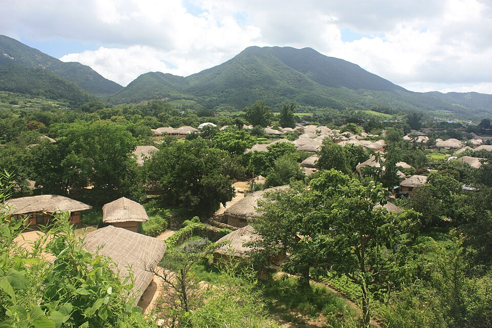

คู่มืออาหารจังหวัดชอลลานัมโด: ปูหินยออซู ซีฟู้ดมกโพและกับข้าวหลายอย่าง กวางจูและอาหารจากรายการอาหารเกาหลี
คู่มืออาหารจังหวัดชอลลานัมโดแยกตามเมือง ตามที่เห็นในรายการทีวีและยูทูบเกาหลี ตั้งแต่ปูหินหมักซอสถั่วเหลืองและปลาไหลของยออซู ชุดข้าวพร้อมกับข้าง 17 อย่างของมกโพ จุงกัน และแกงแปดขาทังทังยี รวมถึงกวางจู และเมืองใกล้เคียงอย่างกokซอง ดัมยัง และซุนชอน
จังหวัดชอลลานัมโด ซึ่งชาวเกาหลีมักเรียกว่า นัมโด ขึ้นชื่อเรื่องโต๊ะอาหารที่เต็มไปด้วยกับข้าวหลายอย่าง เมืองชายฝั่งอย่างยออซูและมกโพมีอาหารทะเลเป็นหลัก ส่วนกวางจู ดัมยัง และกokซองในแผ่นดินมีเนื้อย่างแบบเกาหลี ทเทกัลบีและเส้นจากตลาด คู่มือนี้รวบรวมอาหารที่รายการอาหารเกาหลีและยูทูบเบอร์สายเที่ยวไปกินในภูมิภาคนี้ ได้แก่ Huh Young-man's Food Travel, Ttoganjip, I Live Alone และ Welcome, First Time in Korea?
มกโพ: โต๊ะกับข้าวหลายอย่าง จุงกัน และแปดขาทังทังยี
ชุดข้าวพร้อมกับข้าง 17 อย่าง
ในตอนที่ 8 ของ Huh Young-man's Food Travel (TV CHOSUN) ฮือพานักแสดงโอ ฮยอนกยอง ไปร้านแบกบันในมกโพ ซึ่งมื้อชุดมาพร้อมกับข้าง 17 อย่าง ร้านที่เกี่ยวข้องกับตอนนี้คือ Doljip Sikdang ที่รู้จักจากชุดข้าวพร้อมกับข้าง 17 อย่าง ตอนที่ 143 ของรายการเดียวกันชื่อ "Generous Jeollanam-do hospitality" เน้นกับข้าวที่ยกมาก่อนจานหลัก ซึ่งเป็นภาพตัวอย่างที่ดีของโต๊ะอาหารนัมโด
จุงกัน สิ่งเด่นของร้านจีนในมกโพ
ตอนที่ 300 ของ Huh Young-man's Food Travel พาไปดู จุงกัน เมนูที่คนไม่คุ้นในร้านอาหารจีนของมกโพ ข้อมูลภูมิภาคยังระบุว่าจุงกันและฮองออ (ปลากระเบนหมัก) เป็นอาหารประจำถิ่นของมกโพ คำบรรยายตอนนี้ชวนสงสัยว่าการสั่งจุงกันจะได้หมูเปรี้ยวหวานและจัมปงฟรีหรือไม่ ควรดูคลิปเพื่อรายละเอียด
หนึ่งวันเต็มกับการกินในมกโพ
ในรายการ I Live Alone ของ MBC กลุ่ม "Palm Oil" (จุน ฮยอนมู ปาร์ค นารา และลี จางอู) ไปเที่ยวมกโพในหนึ่งวัน ลำดับเวลาของพวกเขาเหมือนแผนการเดินทาง ได้แก่ ข้าวพอง มื้อเช้าชุดแบกบัน 19 อย่าง ซุปกระดูกซี่วัวตุ๋นเป็นมื้อสาย นมถั่วเหลือง ขนมข้าวเหนียวใบโมกซ์ ขนมปังบาแกตกุ้ง และไม้เสียบหัวใจไก่เป็นของว่าง ปลากระพงและปลาปอมเฟร็ตซาชิมิสดเป็นมื้อกลางวัน ฮันวูมกโพกับข้าวยำเป็นมื้อเย็น และนากจีตังทังยี (แปดขาสดสับ) ดึกๆ
ในตอน EP.18 ของ Ttoganjip นักแสดงตลกปุงจาเที่ยวกินอาหารทะเลและปลาไหลย่างในมกโพ วิดีโอภาษาอังกฤษ "What Real Southern Korean Food Looks Like (Jeonju & Mokpo)" ก็พูดถึงทังทังยีและแปดขาในมกโพ ผู้สร้างคลิปบอกว่าประหลาดใจที่มีอะไรให้ทำมากมาย รวมทั้งทิวทัศน์และความเงียบสงบของเมืองชายฝั่งเกาหลี
ยออซู: ปูหิน ปลาไหล และทะเลยามค่ำ
ปูหินหมักซอสถั่วเหลือง (ดอลเกจัง)
ปูที่หมักด้วยซอสถั่วเหลืองเป็นอาหารที่รู้จักมากที่สุดของยออซู ตามข้อมูลภูมิภาค ในตอน EP.38 ของ Ttoganjip ปุงจาไปร้านปูในยออซู และรายงานว่ากินปูหิน 80 ตัวและข้าว 16 ชาม ในตอนที่ 252 ของ Welcome, First Time in Korea? (MBC every1) กลุ่มเพื่อนชาวเยอรมันกินดอลเกจังตามคำแนะนำของเจ้าของร้าน จากนั้นลองซิปไลน์ ว่ายน้ำ และดูพลุเหนือทะเลยามค่ำของยออซู
ปลาไหลย่าง ซุปปลาไหล และตกปลาในทะเล
ในตอนที่ 352 ของรายการเดียวกัน เชฟชาวฮังการีไปตกปลาในทะเลนอกชายฝั่งยออซู กินข้าวกลางวันบนเรือ และทำอาหารปลาสามอย่างจากที่จับได้ รวมถึงแมอุนทังรสเผ็ด พวกเขายังนั่งกระเช้าทางทะเลพื้นกระจก และจบด้วยอาหารขึ้นชื่อของยออซู คือปลาไหลย่างและซุปปลาไหลทั้งตัว เกาะโอดงโดปรากฏในแท็กของตอนนี้
หอยนางรมและหมู่บ้านภาพจิตรกรรม
มีวิดีโอบล็อกภาษาอังกฤษสองคลิปที่พูดถึงยออซูเช่นกัน คลิปหนึ่งไปร้านหอยนางรมที่มองเห็นทะเลและพระอาทิตย์ตก ส่วนวล็อกเที่ยวคนเดียวของเคย์ลา คอสมอสรวมทัวร์อาหารยออซูเข้ากับหมู่บ้านภาพจิตรกรรมของเมือง
กวางจูและชอลลานัมในแผ่นดิน
กวางจู
กวางจูไม่ได้อยู่ริมทะเล แต่เป็นส่วนหนึ่งของทริปกินอาหารนัมโดส่วนใหญ่ ในตอน EP.19 ของ Ttoganjip ปุงจากินโอดอลป์ปยอ (กระดูกอ่อนหมูเผ็ด) และซัมยอปซัลในกวางจู
กงกุกซูที่ตลาดซอกกok กokซอง
ในตอนกokซองของ Market Tour ของแพก จงวอน แพกไปที่ ตลาดดั้งเดิมซอกกok ซึ่งยังคงบรรยากาศตลาดเกาหลีแบบเก่า และกินกงกุกซู เส้นถั่วเหลืองเย็นที่เขานำเสนอว่าเป็นอาหารฤดูร้อน ร้านที่แสดงในรายการคือ Cheongboseok และเขาพูดถึงถนนดอกคอสมอสที่อยู่ใกล้ๆ
ทเทกัลบีและข้าวไม้ไผ่ที่ดัมยัง
ดัมยังขึ้นชื่อเรื่องป่าไผ่ที่ จุกนกวอน และอาหารประจำถิ่นคือทเทกัลบีกับข้าวไม้ไผ่ ช่องภาษาเยอรมัน Zeit für Hansik สอนวิธีทำทเทกัลบีและอธิบายว่าชื่อมาจากรูปร่างคล้ายขนมข้าวเหนียว และบอกว่าเคยเป็นอาหารในราชสำนัก
หอยทะเลที่โกฮึง
Sinseong Sikdang ในน็อคดง โกฮึง ถูกระบุว่ามีเมนูแปดขาตามฤดูกาล
เคล็ดลับการวางแผน
- มกโพใน 1 วัน: เส้นทางของ I Live Alone เริ่มจากมื้อเช้าชุดแบกบันใหญ่และจบด้วยแปดขาทังทังยี แสดงให้เห็นว่าจะใส่ทั้งโต๊ะกับข้าวและอาหารทะเลได้หลายอย่างในวันเดียวอย่างไร
- เก็บช่วงเย็นไว้ที่ยออซู: ทะเลยามค่ำ พอชาพอชา (เต็นท์ริมถนน) และพลุปรากฏซ้ำในหลายคลิป จับคู่กระเช้าทางทะเลหรือเกาะโอดงโดตอนกลางวันกับปูหรือปลาไหลตอนค่ำ
- เพิ่มซุนชอน: พื้นที่ชุ่มน้ำอ่าวซุนชอนและหมู่บ้านพื้นบ้านนากันอึปซ็อง ซึ่งอยู่ในข้อมูลภูมิภาค เข้ากับทริปยออซูได้ดี
- วันในแผ่นดิน: จากกวางจู คุณอาจไปดัมยังดูจุกนกวอนและทเทกัลบี แล้วไปกินกงกุกซูที่ตลาดซอกกokในกokซอง โปรดทราบว่าเส้นนี้แสดงเป็นอาหารฤดูร้อน
- กินให้พอดี: อย่างที่ตอนที่ 143 ของรายการฮือชัดเจน กับข้าวหลายอย่างมาก่อนจานหลัก อย่าอิ่มเร็วเกินไป
ร้านและสถานที่ในวิดีโอ
-

Photo: Bandoche, Public domain, Wikimedia Commons -

Photo: Marco Schmidt [1], CC BY-SA 3.0, Wikimedia Commons -

Photo: Christian Bolz (크리스티안 볼츠), CC BY-SA 4.0, Wikimedia Commons -

ภาพตัวอย่างอาหาร · Photo: Republic of Korea from Seoul, Republic of Korea, CC BY-SA 2.0, Wikimedia Commons -

ภาพตัวอย่างอาหาร · Photo: Leeyj0401, CC BY-SA 4.0, Wikimedia Commons - Doljip Sikdang (มกโพ) (돌집식당) ชุดข้าวแบกบันพร้อมกับข้าง 17 อย่าง Naver Map Google Maps
- ตลาดดั้งเดิมซอกกok (석곡 전통 시장) ตลาดดั้งเดิมในกokซองที่คงบรรยากาศแบบเก่าไว้ Naver Map Google Maps
ที่ตั้งและเวลาเปิดอาจเปลี่ยนแปลง โปรดตรวจสอบแผนที่ก่อนไป
วิดีโอที่เกี่ยวข้อง
 목포 – 반찬 17가지 백반 한 상 (8회)
목포 – 반찬 17가지 백반 한 상 (8회)
 [#나혼자산다] ✨제3회 팜유 세미나 개최 기원✨ 제2회 팜유 세미나 복습! 팜유즈의 당일치기 목포 식도락 여행🤤 | #전현무 #박나래 #이장우 #팜유 MBC230630방송
[#나혼자산다] ✨제3회 팜유 세미나 개최 기원✨ 제2회 팜유 세미나 복습! 팜유즈의 당일치기 목포 식도락 여행🤤 | #전현무 #박나래 #이장우 #팜유 MBC230630방송
 여수 게장 1티어 맛집 찾았다.. 여수밤바다 낭만포차 게 섰거라🦀 | 또간집 EP.38
여수 게장 1티어 맛집 찾았다.. 여수밤바다 낭만포차 게 섰거라🦀 | 또간집 EP.38
 목포 중국집의 낯선 메뉴 '중깐'
목포 중국집의 낯선 메뉴 '중깐'
 헝가리 셰프들의 여수 바다낚시와 두 번째 한국 여행 (EP.352)
헝가리 셰프들의 여수 바다낚시와 두 번째 한국 여행 (EP.352)
 목포 찐맛집 통째로 씹어먹고 옴 | 또간집 EP.18
목포 찐맛집 통째로 씹어먹고 옴 | 또간집 EP.18
 독일 친구들의 여수 여행 – 집라인, 돌게장, 여수 밤바다 불꽃놀이 (EP.252)
독일 친구들의 여수 여행 – 집라인, 돌게장, 여수 밤바다 불꽃놀이 (EP.252)
 맛의 고장 전라도에서 환장하고 먹고 왔습니다 | 또간집 EP.19
맛의 고장 전라도에서 환장하고 먹고 왔습니다 | 또간집 EP.19
บทความอื่น
- คู่มือของกินตลาดในโซล: ควรกินอะไรที่ตลาดควังจังและตลาดปลาโนรยังจิน (สรุปจากคลิปฟู้ดทัวร์)
- คู่มืออาหารเกาหลีตามภูมิภาค: อะไรควรกินที่โซล ปูซาน เชจู มกโป แทกู จอนจู และเมืองอื่น ๆ (รวบรวมจากวิดีโอมูคบังและอาหารยอดนิยมบนยูทูบ)
- คู่มือกินในเมืองจอนจู: บิบิมบับ อาหารข้างทางหมู่บ้านฮันอก ตลาดกลางคืนนัมบู และเต็กกัลบีกุนซาน (จากวิดีโอท่องเที่ยว)
- คู่มือกินอาหารในเกาะเชจู: หมูดำ อาหารทะเล ตลาดกลางคืนดงมุน และสถานที่ท่องเที่ยวระหว่างทาง
- คู่มือเที่ยวกyeongju และ กยองซังบุก: สถานที่ประวัติศาสตร์ซิลลา อันดง โพฮัง และอาหารท้องถิ่น
- คู่มืออาหารกังวอนโด: อาหารทะเลซกโช ฮเวกุกซู ปูหิมะ และดักกัลบีชุนชอน (จากวิดีโอ)